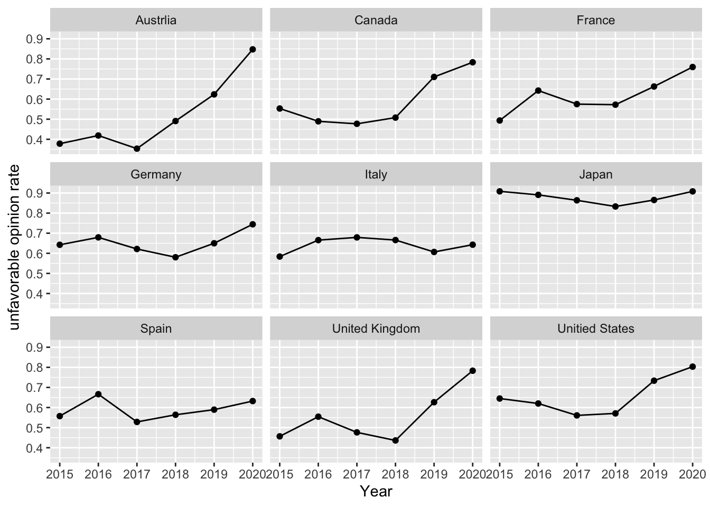
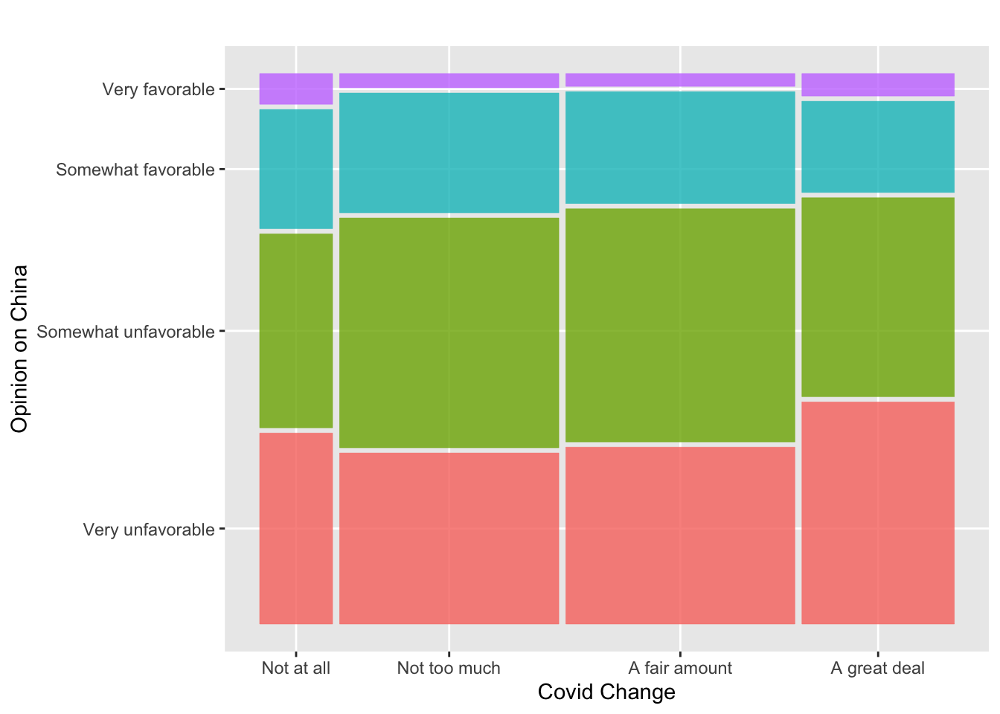
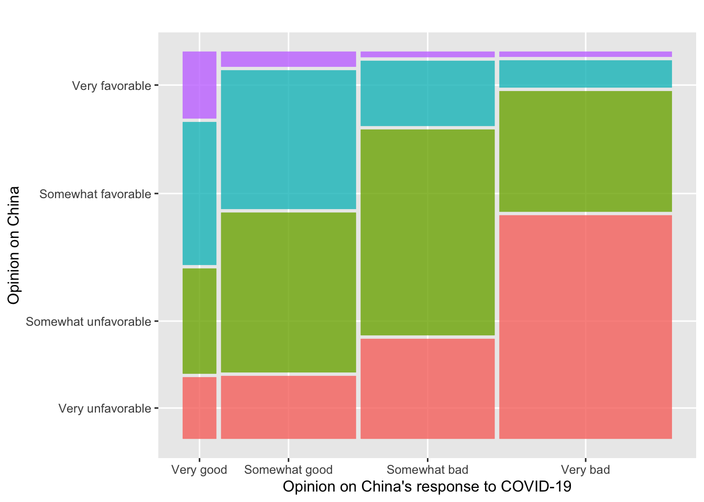
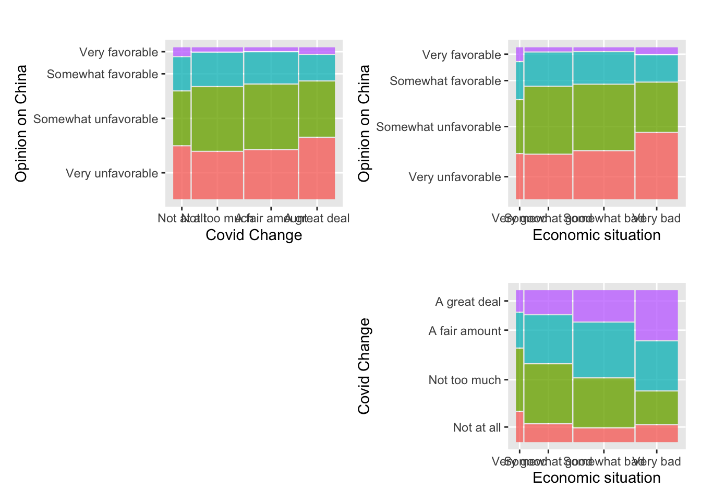
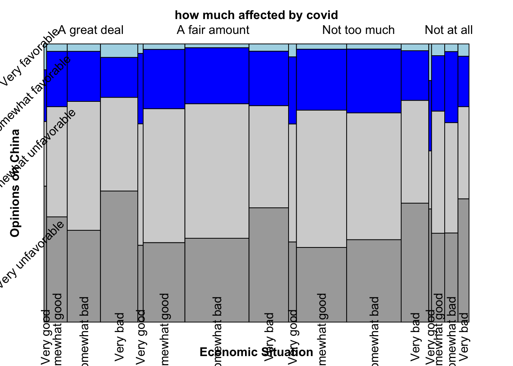
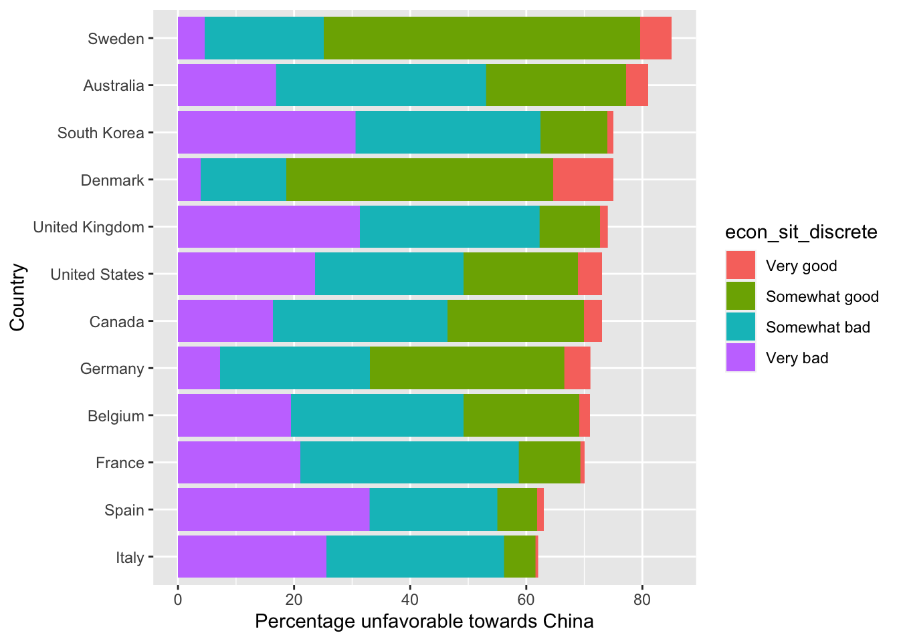
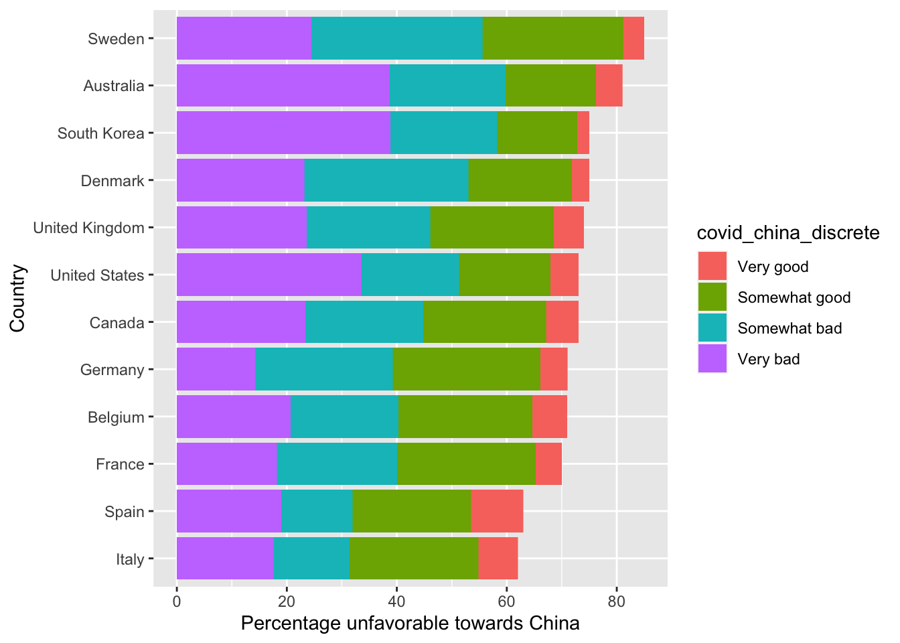
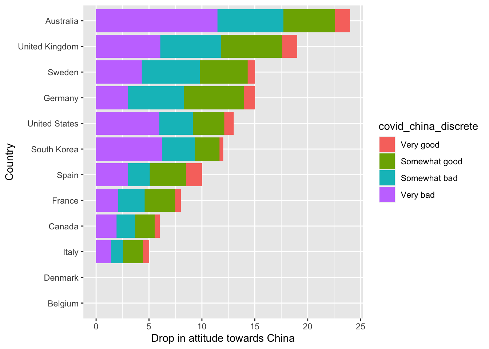
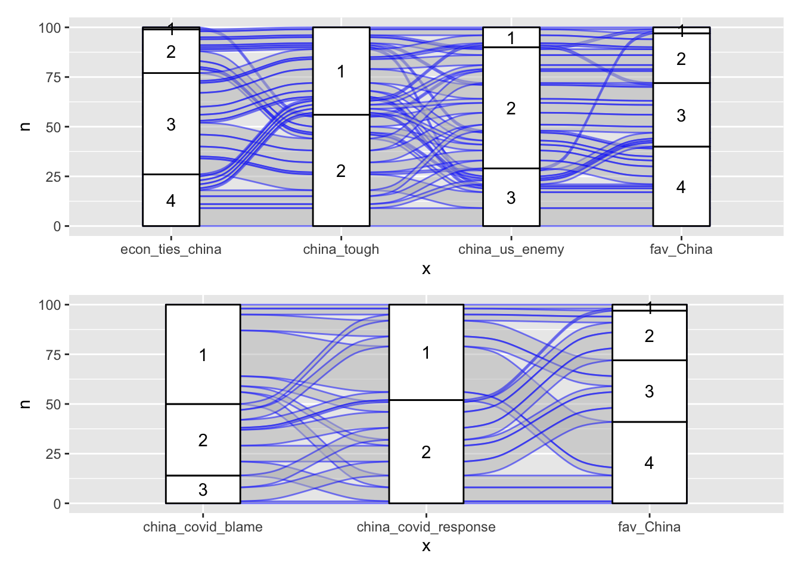

Chapter 5 Results
We first look at overall trend of opinions towards China:

As shown in the graph, the majorities of the nine countries with data available from 2015 have negative views of China, and the unfavorable opinions toward China has increased in recent years.
We then analyze factors on an individual basis, differently from the nation-wide approach of the original study.

People who are more affected by the COVID-19 pandemic tend to have more unfavorable views of China. The rate of people’s most negative views of China was highest in the group most affected by the pandemic, while the rate of people’s most positive views of China was highest in the group not affected by the pandemic. Also, as shown by the dividing line between the blue and green areas, the ratio of unfavorable views to favorable views increases with the impact of the pandemic.
Therefore, the COVID-19 pandemic may increase people’s dislike of China to some extent. To further illustrate the relationship between the COVID-19 and people’s opinions on China. We will investigate more immediate results, that is, people’s opinions on how well China has handled the coronavirus pandemic.

The correlations here are much more apparent, as shown in the stepped pattern of this mosaic plot. Moreover, in the previous graph, the majority of each group expresses negative views toward China. However, in the current graph, the majority of people who say China has done a very good job dealing with the coronavirus outbreak think of China positively. This significant difference reveals that people’s evaluations of China’s response to COVID-19 can greatly affect people’s opinion on China. Moreover, the results of people’s opinions on China and China’s response to Covid-19 are very consistent. People who think China has handled the coronavirus outbreak poorly have more negative evaluations on China and vice versa.
Covid-19 will affect other aspects, such as the economy, and indirectly affect people’s evaluation of China. People who are in different economic situations may have different opinions on China. Also, people who are in bad economic situations are more likely to be influenced by the pandemic and hence have a bad attitude toward China. We will then analyze how opinions on China were affected by the economic situation and covid effect on life respectively and interactively.

All the three subgraphs are consistent with what we intuitively expected. People affected most by the covid are more likely to have unfavorable opinions on China; People in bad economic situations are more likely to have unfavorable opinions on China; People in bad economic situations are more likely to be affected by the covid. Then we consider all these three variables in an integrated graph.

From the graph, the percentage of very unfavorable opinions are extremely high in the “very bad” economic situation category for all four “affected by covid” groups. This indicates that people in bad condition are much more likely to have highly unfavorable opinions on China no matter how the covid changed their life. Also, for people in good economic situations but greatly affected by the Covid-19, they also tend to hate China. The results of opinions for all four “affected by covid” groups are very similar except for people who are both in very good economic situations and not affected by the covid, which is the first column in the “not at all” group. People in this group have significantly better views of China. This is consistent with our conjecture that the Covid-19 may account for the highly increase of negative opinions on China.
Next, we study whether the factors studied above apply across countries. That is, for factors significant on an individual-level, we ask whether these factors can indicate a country’s overall opinion towards China. We find that it is not always true.

Bars in figure XX and XX indicate countries, ranked by percentage of respondents with unfavorable opinions towards China (very unfavorable plus somewhat unfavorable). They are colored by percentages of respondents corresponding to the labelled group. These by-country graphs show interesting differences from by-individual mosaic plots.
Figure XX shows that the correlation between economic situation and opinion towards China does not apply across country. This figure shows no clear pattern, meaning that economics situation does not indicate whether the country is more unfavorable towards China. On the other hand, the mosaic plot (Figure XX) shows that an individual is more likely to be unfavorable towards China if he/she thinks the economic situation is bad. Therefore, economic situation is one such factor that is significant for individuals but not for countries.
On the other side, perception on China’s handling of Covid applies not only on the individual level but also across countries. In figure XX, the bottom countries, i.e. those less unfavorable towards China, tend to have fewer percentages thinking that China handled Covid very or somewhat badly. This factor has also been shown to be very significant on the individual level (figure XX).

Before, we analyzed correlations, and find idea bout how China handled Covid to be most significant. However, we do not know if this idea led to unfavorable opinions, or vice versa. To get a better idea, we study whether idea about China’s handling Covid is related a drop in public opinions (increase in unfavorabe percentage) from 2019 to 2020.
Figure XX is a similar barchart, but countries are now ranked by drop in opinion towards China. We see correlation also bewteen this factor and drop in opinion. Therefore, it is likely that opinion on how China handled Covid is one of the causes of unfavorable opinion towards China today.
That said, these two factors can also be interlinked. We do not know whether unfavorable opinion towards China inherent in 2019 also caused negative perceptions of the way China handled Covid.
Last, we focus our analysis on people in the U.S.

‘econ_ties_china’ shows people’s opinions on economic ties between the U.S. and China. The larger the number is, the worse economic ties are. ‘china_tough’ shows people’s opinions on economic and trade policy toward China. 1 represents no tougher economic relationship, while 2 represents a tougher economic relationship. ‘china_us_enemy’ represents the relationship between China and the U.S. 1 represents a partner, 2 represents a competitor, and 3 represents an enemy.
From the first alluvial graph, data in the lower half part of each column are very likely to stay on the lower part, indicating that people who have negative feelings toward China will always give bad evaluations on China in any aspect. Also, the last two columns are much more consistent. As we expected, people who regard China as an enemy are very likely to have unfavorable opinions on China.
The larger the ‘china_covid_blame’ is, the more China should be blamed for its initial handling of the coronavirus outbreak. The larger the ‘china_covid_response’ is, the more China should be responsible for the outbreak of the coronavirus regardless of relations between the U.S. and China. The second alluvial graph is much tidier than the first one, indicating that people have more complicated opinions on politics than those on a sudden event. Also, the first two columns are consistent with each other since they are similar questions except that the latter included political concerns. Surprisingly, in the U.S., there is still a big difference between opinions on China’s response to the Covid-19 and opinions on China.